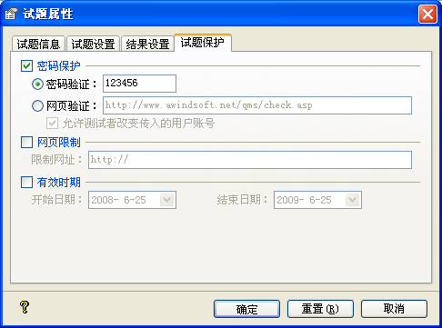

| 属性设置 - 试题保护 |
|
试题保护页面如下图所示：  此页面的设置是为了保护您所出的测试题的，具体作用如下所述： Ø 密码保护 此选项功能在于设置试题的密码保护。若其选定，则测试者做题时需要输入密码。 密码验证：您可以在这里设定试题密码。做题时，试题开始会显示一个密码框，测试者需要输入出题人设定之密码才能继续。 网页验证：您可以在这里设置帐号验证网页。做题时，会显示一个账号与密码框，测试者需要输入帐号与密码，输入的帐号与密码在点击[登录]后 会被发送到此处设定的网页去验证，验证通过才可以继续做题。请参考数据收集部分对它的描述。 允许测试者改变传入的用户帐号：此选项只在[网页验证]方式下有用。当您选择[网页验证]时，测试者输入的帐号将会传入[试题信息]的用户帐号处(此处，在[试题信息]的[测试者信息设置]处，须勾选[显示帐号]) 若您勾选了此选项，则测试者可以改变传入的帐号；若未勾选，则测试者不能再更改传入的帐号。此处设置，可以保证通过验证的测试者信息的有效性。 Ø 网页限制 此选项限制了您所出的题必须在此处设定的网站上才能运行。若其选定，且所出的试题不在此网站及其子站上运行时，试题会提示“请在网站[http://www.myspace.net]上运行此测试题”。此提示信息可在播放器的字符串设置中的[网站限制提示]处定义 ，其中的“%s”不能被更改。 Ø 有效时期 您可以在这里设定当前试题可用的时间区间。您若设定此选项，则试题只能在设定的时间区间中才能提供测试。如果测试者不在设定的时间区间中做题，则试题会提示“请在日期[2008-03-19]与[2008-03-27]之间进行此测试”，此提示信息可在播放器的字符串设置中的[日期限制提示]处定义 ，其中的“%s”及“%e”不能被更改。 如果此处三个选项都被选定，其执行顺序为有效日期->网页限制->密码保护，只有全部条件都通过，测试者才能继续做题。 |